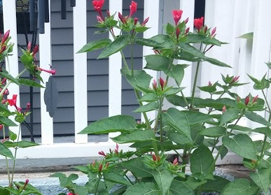
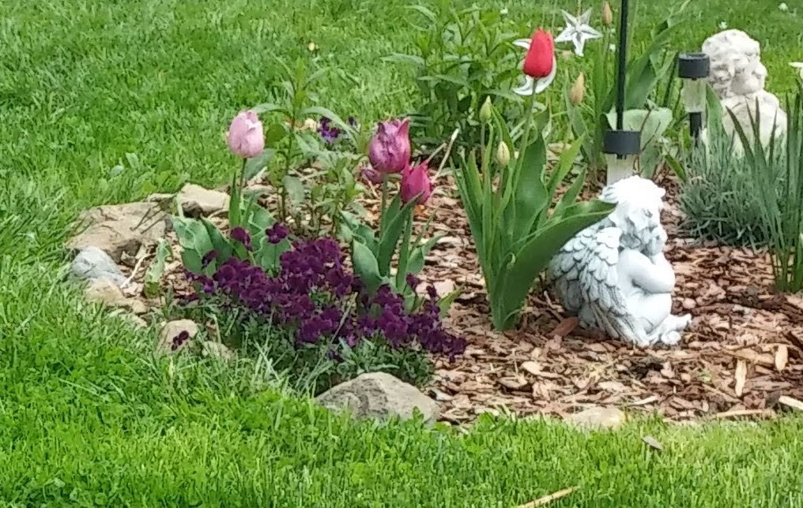

General Four O'Clocks Info
- Blooms in the Summer
- cut down or pulllout after the frost has hit them, you will know!
- Collect the seeds at the end of summer (little black balls) and share or sow in different gardens for an easy care plant
- General fertilizer
- 
- No known pests
- not sure of they just come back or reseed
- Located around porch and may be in other gardens
- For more info visit Four O'Clocks info
General Tulip Info
- Bloom in the spring
- Clip all foliage after flower fades and leaves start to yellow
- No need to thin
- General fertilizer
- 
- Pests include deer,bunnies
- Fall planted bulbs that don't always give good blooms
- Located in various gardens with several colors and sizes
- For more info visit Tulip info

General Daffodil Info
- Blooms in the spring
- Clip all foliage after flower fades and leaves start to yellow<
- No thinning neccesary , deadhead regularly
- General fertilizer

- Pests may include deer and rabbits but rare
- several varieties in the gardens also known as Jonquil as pictured
- Located in various gardens mostly in front and side , yellow and white
- For more info visit Daffodil info
General Black-eye Susan Info
- Blooms mid Summer
- Deadhead regularly to promote new blooms
- Thin in spring and fall, these will take over the garden!
- General fertilizer

- Usually deer and ground hog likes these
- Perenniel,At the end of the flowering season,cut down to ground.
- Found everywhere in yard front and back
- For more info visit black-eyed Susan info
General Anemone Info
- Blooms early-mid spring
- low growing fall bulb
- No need to thin
- General fertilizer

- no known pests
- Deadhead as needed.greens pull out after starting to yellow
- new bulbs 2020 planted and located in several gardens in red / white and periwinkle
- For more info visit Anemone info
General Creeping Sedum Info
- Blooms early summer
- low growing ground cover
- Pull out if getting into too many areas
- General fertilizer
- no known pests
- dead flowers pull out easily
- May find it in other gardens
- For more info visit Sedum ground cover info